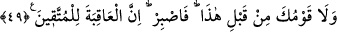

nefret duymak mânâsına gelir. Ehl-i beyt’e hürmeti muhâfaza et ki Allah Teâlâ da seni
muhâfaza etsin. Bir hadiste şöyle buyrulur:
“Allah Teâlâ’nın hürmet edilmesini istediği üç şey vardır. Bunlara riayet edenlerin
Allah da dinlerini korur. Riayet etmeyenlerin ise Allah Teâlâ ne dinlerini ne de
dünyalarını korur. Bunlar: İslâm’ın hurmeti, benim hurmetim ve benim yakınlarımın
hurmetidir. Benim ailemin, Ensar’ın ve Arapların haklarını tanımayan, mutlaka şu üç
gruptan birindendir: “Ya münafıktır ya zinâkârdır ya da anneleri temiz değilken
onlara hamile kalmıştır.”[138]
Din yolunda dinsizden yardım isteme
Tutulmuş Ay’dan sabah vaktinin aydınlığını isteme
Allah’ım bizi hak vesilelerden kopmaktan koru! Dünyada da ahirette de hak üzere
olan topluluğa ilhak buyur.
49. “(Ey Muhammed!) İşte bunlar sana vahyettiğimiz gayb haberlerindendir.
Bundan önce onları ne sen biliyordun ne de kavmin. O halde sabret. Çünkü iyi
sonuç sakınanlarındır.”
Ey Muhammed! “İşte bunlar” yani Nuh (a.s.)’ın kıssası, diğer peygamberlerin
karşılaştığı hususlarda “sana” yol gösterip örnek olması için Cebrâil vasıtasıyla
“vahyettiğimiz gayb haberlerindendir.” Gayb haberlerinin bir kısmıdır. Çünkü
üzerinden çok uzun zaman geçmesi hasebiyle bu kıssanın bilgisi Allah’tan başka hiç
kimsede bulunmamaktadır.
“Bundan önce” yani sana vahyedip haber vermemizden önce “onları ne sen
biliyordun ne de kavmin.” Gerek senin gerekse kavminin meçhûlü idi.
Onların bu kıssayı bilmediğinin zikredilerek Hz. Peygamber (s.a.)’in bu kıssayı
başkasından öğrenmediğine dikkat çekilmektedir. Çünkü kendi kavminin dışındakilerle
pek haşır-neşir olmamıştır. Kendi kavmi ise çok sayıda olmalarına rağmen bu kıssayı
duymamışlardı bile. O halde bu kıssa nasıl olur da onlardan öğrenilebilir?!
Müftî Sâ‘dî, âyeti şöyle açıklar: “Bu kıssayı, onlar seni yalanladıkları takdirde
öncekilerin başına gelen belaların, kendilerinin de başlarına gelebileceği konusunda
onları uyarsın ve güzel bir örnek olsun diye öğretiyoruz.”
“O halde” bunları vahyettiğimizde “sabret.” Ebü’l-Leys Tefsîri’nde şöyle denilir:
“Kavmin seni tasdik etmezse tıpkı Nûh (a.s.) uzun süre sabrettiği gibi sen de kavminin
eziyetine, yalanlamasına ve peygamberlik görevini tebliğdeki zorluklara sabret.”